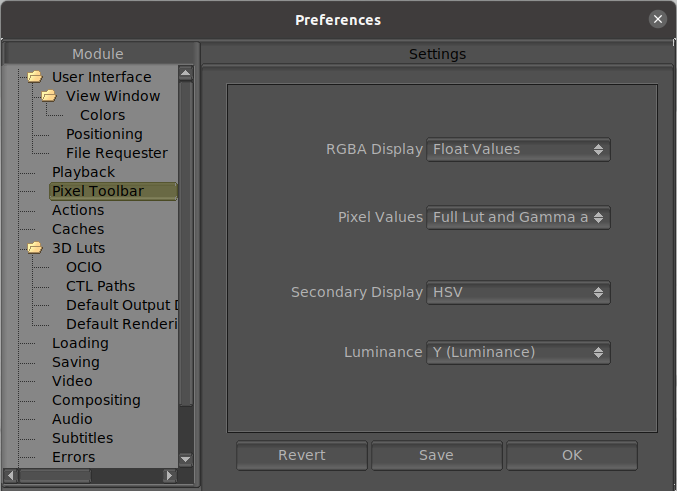

|  |
Here you can change how mrViewer displays the values in RGBA. The different choices are float, hex, and decimal (0...255) Here you can set the default setting for what pixel values are displayed. The options are: Full Lut and Gamma, Gamma Only, Original Values without Lut or Gamma applied. From this menu, you can select what is the secondary display for the color values. The default is HSV, but can also be HSL, XYZ CIE XYZ, xyY CIE xyY, Lab CIELAB (L*a*b*), Luv CIELUV (L*u*v*), YUV (Analog PAL), YDbDr (Analog SECAM/PAL-N), YIQ (Analog NTSC), ITU-601 (Digital PAL/NTSC YCbCr), ITU-709 (Digital HDTV YCbCr). The Luminance controls how mrViewer displays its luminance information in the pixel toolbar. It can be one of: Y (Luminance), Y' (Lumma), or L (Lightness). |